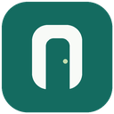

روزن؛ اتصال کروم به Tor
نسخهٔ ۰.۴.۰ · راهنمای مک و ویندوز
این نسخه رایگان است و به VeePN یا سرور خریداریشده نیاز ندارد. Tor Browser باید روی همین دستگاه باز و متصل بماند. افزونه به شبکهٔ عمومی Tor وابسته است؛ سرعت، کشور خروجی و پذیرش اتصال توسط Gemini تضمین نمیشوند.
۱. نصب افزونه
- فایل ZIP را استخراج کنید و پوشهٔ
Rozane-Tor-0.4.0را در محل ثابتی نگه دارید. - Tor Browser را باز و متصل نگه دارید. فعلاً وضعیت WireGuard خود را مانند آزمایش موفق قبلی نگه دارید.
- در کروم وارد
chrome://extensionsشوید. نسخههای قدیمی Rozane و افزونهٔ VeePN را غیرفعال کنید. در صورت وجود، افزونههای دیگر کنترلکنندهٔ پروکسی را هم غیرفعال کنید. - Developer mode را روشن کنید، Load unpacked را بزنید و پوشهٔ
Rozane-Tor-0.4.0را انتخاب کنید. فایلmanifest.jsonمستقیماً داخل همین پوشه است. خود فایل ZIP را انتخاب نکنید. - روزن را از منوی افزونهها باز کنید. «فعالکردن مسیر Tor» و سپس «آزمایش اتصال Tor» را بزنید.
۲. بررسی نتیجه
اگر «اتصال آزمایشی از Tor عبور کرد» نمایش داده شد، تبهای قدیمی Gemini را ببندید و با «بازکردن Gemini» یک تب تازه باز کنید. ابتدا یک پیام کوتاه بفرستید؛ سپس با حساب شخصی وارد شوید و دوباره پاسخ واقعی بگیرید.
آزمایش اتصال، فقط درخواست به سرویس رسمی بررسی Tor را تأیید میکند. موفقیت همین درخواست، اثبات موفقیت Gemini نیست. کاربر در نسخهٔ ۰.۳.۰ ورود و دریافت پاسخ Gemini در کروم اصلی مک را تأیید کرده است. این نتیجه بهتنهایی عملکرد Flow و Notebook یا دستگاههای دیگر را تأیید نمیکند.
۳. اگر آزمایش اتصال کامل نشد
ابتدا مطمئن شوید Tor Browser هنوز متصل است. در Terminal این دستور را اجرا کنید؛ تنظیمی را تغییر نمیدهد و DNS مقصد را به پروکسی میسپارد:
curl -q --noproxy '' --proxy socks5h://127.0.0.1:9150 --connect-timeout 5 --max-time 20 --fail --silent --show-error https://check.torproject.org/api/ip
اگر خروجی شامل "IsTor":true بود، درگاه آماده است. اگر «Connection refused» آمد، ورودی TCP محلی باز نیست یا درگاه دیگری دارد. اگر زمان تمام شد، وضعیت اتصال Tor یا دسترسی به سرویس بررسی نامشخص است؛ این خطا بهتنهایی ثابت نمیکند Tor قطع است.
فایل Check-Tor.command همین آزمایش را انجام میدهد و متن سادهٔ نتیجه را نمایش میدهد. میتوانید در Terminal عبارت bash را بنویسید، فایل را به پنجره بکشید و Enter بزنید؛ نیازی به sudo نیست.
۴. بازکردن ورودی محلی Tor در مک، فقط اگر لازم شد
بعضی نسخههای Tor Browser از سوکت محلی استفاده میکنند که کروم مستقیماً به آن وصل نمیشود. در خودِ Tor Browser وارد about:config شوید و این تنظیمات موجود را بررسی کنید. قبل از تغییر، مقدار قبلی را یادداشت کنید:
| نام تنظیم | مقدار |
|---|---|
| extensions.torlauncher.socks_port_use_ipc | false |
| extensions.torlauncher.socks_port_use_tcp | true، اگر این تنظیم در نسخهٔ شما وجود دارد |
| network.proxy.socks | 127.0.0.1 |
| network.proxy.socks_port | 9150 |
اگر تنظیمهای اصلی در نسخهٔ شما وجود ندارند، کلیدهای حدسی جدید نسازید؛ از صفحهٔ تنظیمات اتصال Tor تصویر بگیرید. Tor Browser را با ⌘Q کاملاً ببندید، دوباره باز کنید و Connect را بزنید. سپس آزمایش اتصال روزن را تکرار کنید. میزبان را روی 0.0.0.0 نگذارید؛ ورودی باید فقط روی همین مک قابلدسترسی باشد.
اگر Tor گزارش داد درگاه اشغال است، شمارهٔ درگاه آزاد دیگری مانند 19150 را در Tor و بخش «تنظیم درگاه محلی» روزن یکسان وارد کنید. به درگاه کنترل Tor، مانند ۹۱۵۱، وصل نشوید.
اگر Tor تأیید شد ولی Gemini خطا داد
- نسخههای قدیمی Rozane باید غیرفعال باشند؛ این نسخه اصلاً کد خطا یا پاسخ سرور گوگل را تغییر نمیدهد.
- تبهای قدیمی Gemini را ببندید. اگر اتصال قدیمی باقی مانده بود، کروم را با ⌘Q ببندید و دوباره باز کنید؛ Tor Browser باز بماند.
- نشست کروم ممکن است مدار و کشور خروجی متفاوتی از Tor Browser داشته باشد. «New Circuit for this Site» داخل Tor Browser، مدار کروم را الزاماً تغییر نمیدهد.
- اگر همچنان خطای ۱۰۶۰ دیده شد، از پایین صفحهٔ Gemini و گزارش روزن تصویر/متن بفرستید. هیچ گذرواژه، کوکی یا فایل کامل HAR لازم نیست. تغییر IP یا کشور خروجی بدون مشاهدهٔ نتیجه، موفقیت محسوب نمیشود.
دامنهٔ اثر و خاموشکردن
دامنههای google.com، googleapis.com، gstatic.com، googleusercontent.com، ggpht.com و زیردامنههایشان، بههمراه labs.google، accounts.youtube.com و check.torproject.org از Tor عبور میکنند. این یعنی Gmail و Drive هم ممکن است کندتر شوند. سایر سایتها از مسیر معمول سیستم میروند؛ قواعد اختصاصی یک پروکسی سیستم قبلی هنگام روشنبودن افزونه اعمال نمیشوند. برای محدودکردن اثر، میتوانید یک پروفایل جداگانهٔ کروم برای Gemini بسازید.
برای دامنههای انتخابشده مسیر جایگزین مستقیم تعریف نشده است؛ اگر Tor خاموش شود، بارگذاری این دامنهها ممکن است متوقف شود. با «خاموشکردن مسیر Tor»، روزن فقط تنظیم متعلق به خودش را پاک میکند و تصمیمگیری دوباره به کروم/سیستم/سایر افزونهها واگذار میشود. تنظیمات Tor را میتوان به مقادیر قبلی بازگرداند. این نسخه در Incognito فعال نمیشود.
حریم خصوصی و محدودیتها
روزن متن گفتگو، کوکی، رمز، توکن ورود یا تاریخچه را نمیخواند. تنها درخواست مستقیم افزونه، آزمایش اختیاری HTTPS به check.torproject.org/api/ip است؛ این سرویس IP خروجی را میبیند ولی روزن آن را در گزارش ذخیره نمیکند. مقصد نهایی و Tor همچنان زیرساختهای خارجیاند. افزونه TLS را باز نمیکند و گواهی نصب نمیکند.
کروم متصل به Tor، محافظتهای ناشناسماندن Tor Browser را ندارد. خود پروژهٔ Tor استفاده از مرورگرهای دیگر را برای این هدف توصیه نمیکند. این ابزار فقط برای هدایت ترافیک وب تعریفشده است؛ WebRTC، همهٔ برنامههای دستگاه، تمام دامنههای احتمالی آیندهٔ گوگل و تمامی سیگنالهای موقعیت را پوشش نمیدهد.
این بسته مخصوص کروم دسکتاپ است. نسخهٔ آیفون و اندروید در آن وجود ندارد. سهمیهٔ Gemini، امکانات پولی و محدودیتهای حساب تغییر نمیکنند.
آنچه بررسی شده است
اعتبار ساختار فایل، مسیریابی دامنهها، نبود مسیر مستقیم جایگزین برای مقصدهای انتخابشده، فعال/غیرفعالسازی، برخورد با افزونهٔ دیگر و نتیجههای آزمایش Tor با تستهای خودکار بررسی شدهاند. نسخهٔ ۰.۳.۰ طبق گزارش کاربر در کروم اصلی مک برای ورود و پاسخ Gemini موفق بوده است. تغییرات نسخهٔ ۰.۴.۰ و عملکرد واقعی Flow، Notebook و ویندوز هنوز باید روی دستگاه کاربر بررسی شوند.
ارتقا از نسخهٔ ۰.۳.۰
- در روزن قبلی «خاموشکردن مسیر Tor» را بزنید؛ سپس افزونهٔ قبلی را در chrome://extensions غیرفعال کنید.
- بستهٔ جدید را استخراج و پوشهٔ Rozane-Tor-0.4.0 را در محل ثابتی نگه دارید. با Load unpacked همین پوشه را انتخاب کنید.
- تنظیم موفق Tor و WireGuard را تغییر ندهید. نسخهٔ جدید را فعال کنید، پورت 9150 را بررسی و آزمایش اتصال را اجرا کنید.
- برای آزمایش مستقل، افزونهٔ اختصاصی Flow را هم موقتاً خاموش کنید. از دکمههای Gemini، Flow و Notebook استفاده کنید.
سه سرویس در یک افزونه
دکمهها به Gemini، Flow و Notebook میروند. آدرس قبلی notebooklm.google.com و لینکهای قدیمی Flow در labs.google هم در مسیر Tor هستند. این نسخه کد افزونهٔ تجاری Flow یا تغییر پاسخ تشخیص کشور آن را در خود ندارد؛ اتصال از طریق Tor انجام میشود.
برای سنجش نتیجه، در Gemini پاسخ واقعی، در Notebook افزودن یک منبع ساده و پاسخ مستند، و در Flow ورود و یک تولید محتوا را بررسی کنید. تولید در Flow ممکن است از اعتبار حساب شما مصرف کند؛ روزن خودکار هیچ محتوایی تولید نمیکند. سهمیه، اشتراک و شرایط دسترسی گوگل تغییر نمیکنند. ویدیو و فایلهای بزرگ ممکن است روی Tor کند باشند.
نصب برای دوستان، از جمله ویندوز
- همین ZIP را ارسال کنید؛ پوشهٔ پروفایل Chrome، کوکیها، رمزها یا کانفیگ خصوصی VPN خودتان را نفرستید. کد روزن تحت مجوز MIT قابل بازتوزیع است؛ فایل LICENSE را نگه دارید.
- هر نفر Tor Browser رسمی را روی دستگاه خودش نصب و متصل کند. Tor داخل ZIP نیست. اگر برای اتصال Tor به VPN یا پل نیاز دارد، باید اتصال خودش را فراهم کند؛ VPN شما با افزونه منتقل نمیشود.
- در ویندوز ZIP را با Extract All استخراج کند؛ سپس مراحل Developer mode و Load unpacked بالا را در Chrome انجام دهد. پورت پیشفرض روزن 9150 و میزبان 127.0.0.1 است؛ هر دو به همان دستگاه اشاره میکنند.
- Tor باز و متصل بماند؛ روزن روشن و «آزمایش اتصال Tor» اجرا شود. هر نفر با حساب خودش وارد سرویس شود.
در ویندوز اگر آزمایش اتصال شکست خورد، در PowerShell این دستور فقط خواندنی را اجرا کنید. خروجی شامل IP خروجی Tor است؛ نیازی به ارسال IP نیست:
curl.exe -q --proxy socks5h://127.0.0.1:9150 --connect-timeout 5 --max-time 20 --fail --silent --show-error https://check.torproject.org/api/ip
فایل Check-Tor.command مخصوص مک است و برای نصب افزونه روی ویندوز لازم نیست. نسخهٔ ویندوز در محیط واقعی توسط توسعهدهنده آزمایش نشده است. روی مرورگر سازمانی ممکن است نصب دستی یا تغییر پروکسی با سیاست مدیر سیستم محدود باشد.
اگر خروجی Tor پذیرفته نشد
در آزمایش موفق اولیه، محدودکردن خروجی Tor به گرهٔ عمومی زیر مؤثر بود. این تنظیم داخل ZIP نیست و خودکار اعمال نمیشود. اگر همین تنظیم را قبلاً انجام دادهاید، آن را حفظ کنید؛ دوستان ابتدا اتصال عادی را آزمایش کنند.
ExitNodes 94.16.115.121
فقط برای تکرار همین آزمایش: Tor Browser را کامل ببندید، از فایل torrc نسخهٔ پشتیبان بگیرید و یک خط ExitNodes با مقدار بالا قرار دهید. اگر از قبل این گزینه وجود دارد، مقدار قبلی را یادداشت و همان خط را ویرایش کنید؛ خط تکراری نسازید. در ویندوز فایل در مسیر Browser\TorBrowser\Data\Tor\torrc زیر پوشهٔ Tor Browser است؛ در مک مسیر آن ~/Library/Application Support/TorBrowser-Data/Tor/torrc است. با ویرایشگر متن ساده ذخیره کنید؛ در ویندوز نام فایل نباید torrc.txt شود. سپس Tor را دوباره باز و متصل کنید.
ثابتکردن خروجی، انتخاب گرهها را محدود میکند و برای ناشناسماندن مناسب نیست. این گره ممکن است از دسترس خارج شود یا توسط گوگل رد شود؛ تضمین دائمی ندارد. برای بازگشت، Tor را ببندید و مقدار قبلی را از پشتیبان برگردانید یا فقط خطی را که افزودهاید حذف کنید. گزینهٔ StrictNodes لازم نیست.
بعد از روشنکردن دوبارهٔ رایانه
اتصال اینترنت/VPN موردنیاز خودتان ← بازکردن و اتصال Tor Browser ← بازکردن Chrome و فعالکردن روزن در صورت خاموشبودن ← آزمایش اتصال ← انتخاب سرویس. Tor را باز نگه دارید. برای پایان استفاده، اول مسیر روزن را خاموش و بعد Tor را ببندید. نیازی به نصب مجدد یا ویرایش هرروزهٔ torrc نیست.
گزارش check ممکن است بعد از خواب سرویس پسزمینهٔ کروم خالی شود؛ این بهتنهایی نشانهٔ قطع اتصال نیست. برای نتیجهٔ تازه «آزمایش اتصال Tor» را بزنید.